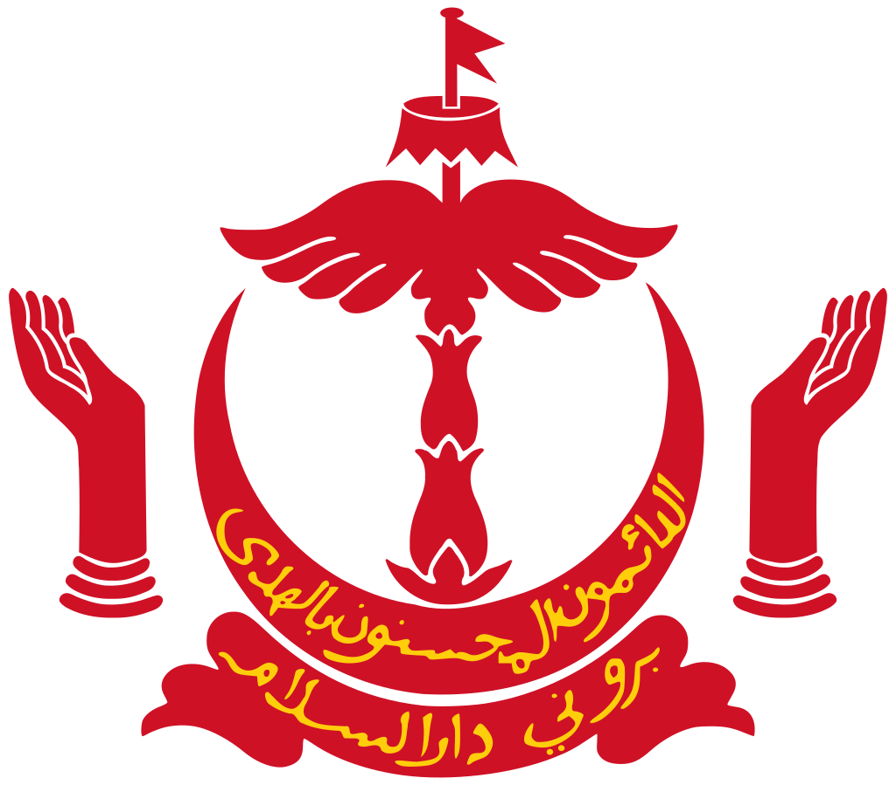

____
Флаг
Флаг Брунея принят 29 сентября 1959 года.
Жёлтый цвет на флаге Брунея является традиционным. Мачта, птичьи крылья, зонт и вымпел — символы власти. Кисти рук олицетворяют заботу о благосостоянии народа. Арабская надпись на полумесяце гласит: «Вечное служение Аллаху». Внизу на ленте ещё одна надпись: «Бруней — обитель мира», которая является девизом маленького султаната, входящим в официальное название страны: Бруней-Даруссалам.

Герб
Герб (эмблема) Брунея — один из официальных символов государства Бруней, утверждённая в 1921 году. Эмблема состоит из пяти главных элементов: флажка, королевского зонтика, крыла, рук и полумесяца.
На полумесяце написан на арабском языке национальный девиз: «Всегда на службе под руководством Бога». Ниже этого (на ленте) — название нации на арабском языке, которое звучит как «Бруней-Даруссалам» или «Бруней — земля мира».
Крылья символизируют защиту правосудия и мира. Ниже них — полумесяц, который является символом ислама — государственной религии Брунея. Руки символизируют обязанность правительства защитить людей.

____